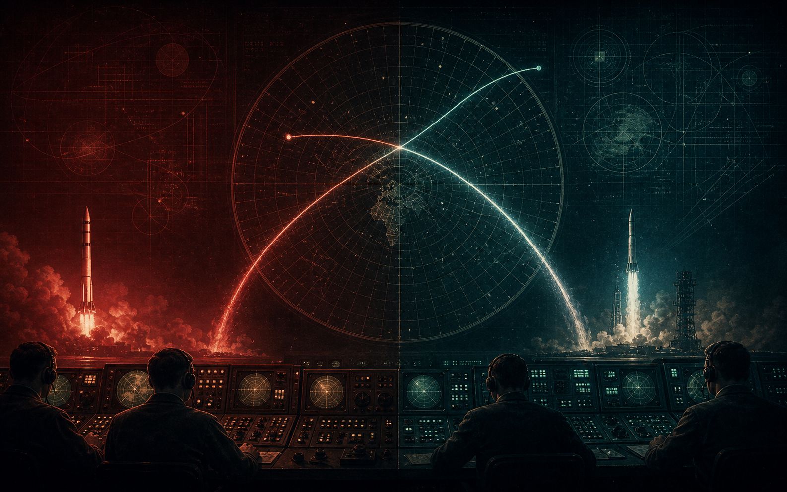
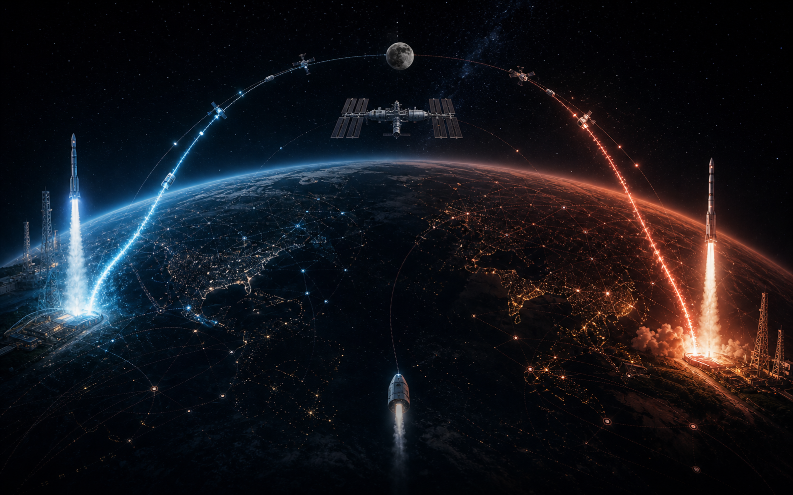
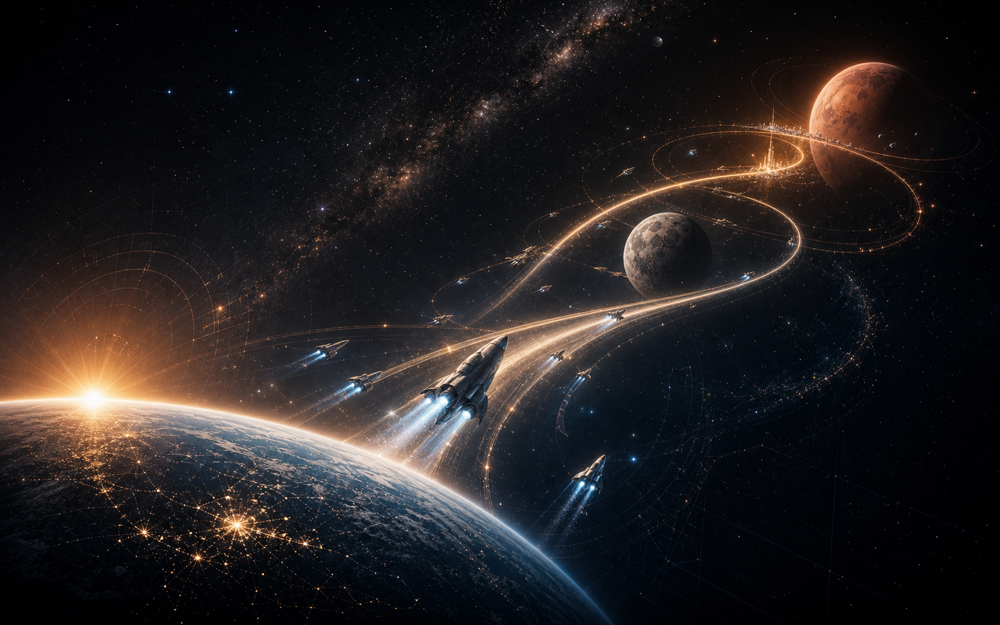
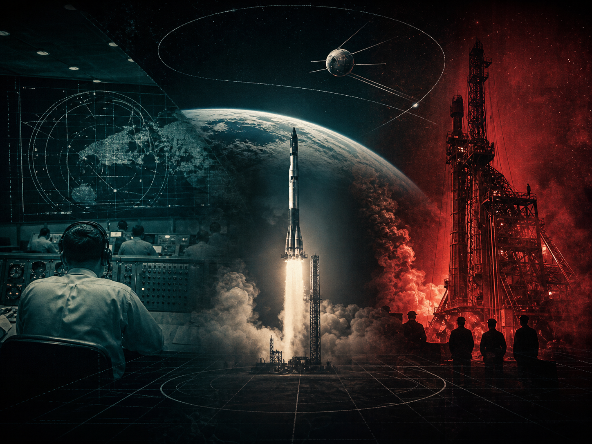
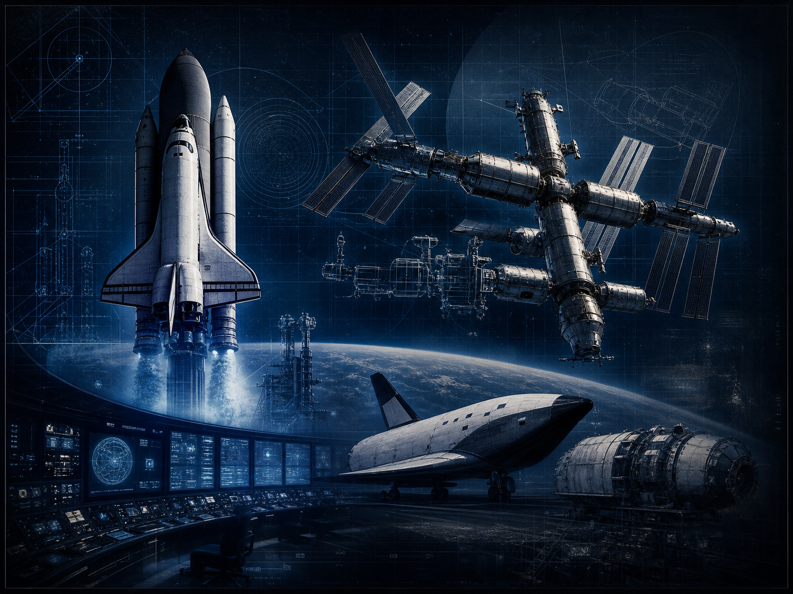
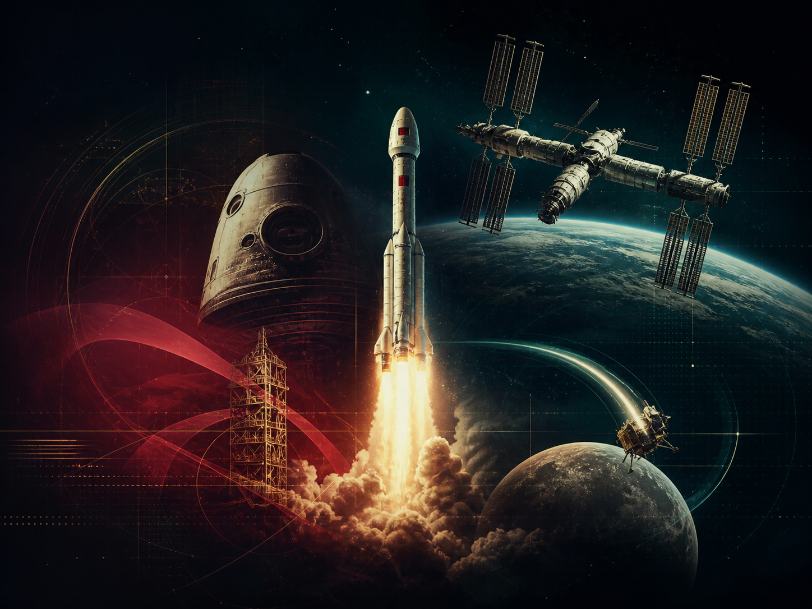
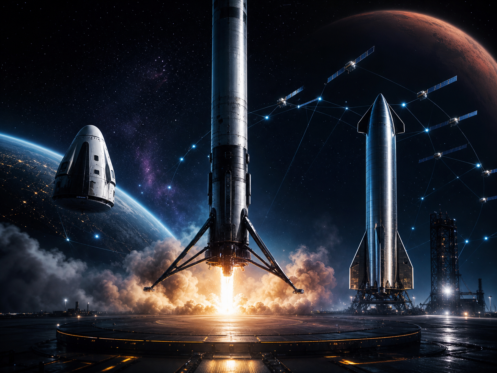
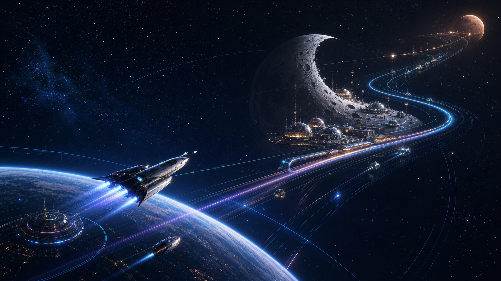
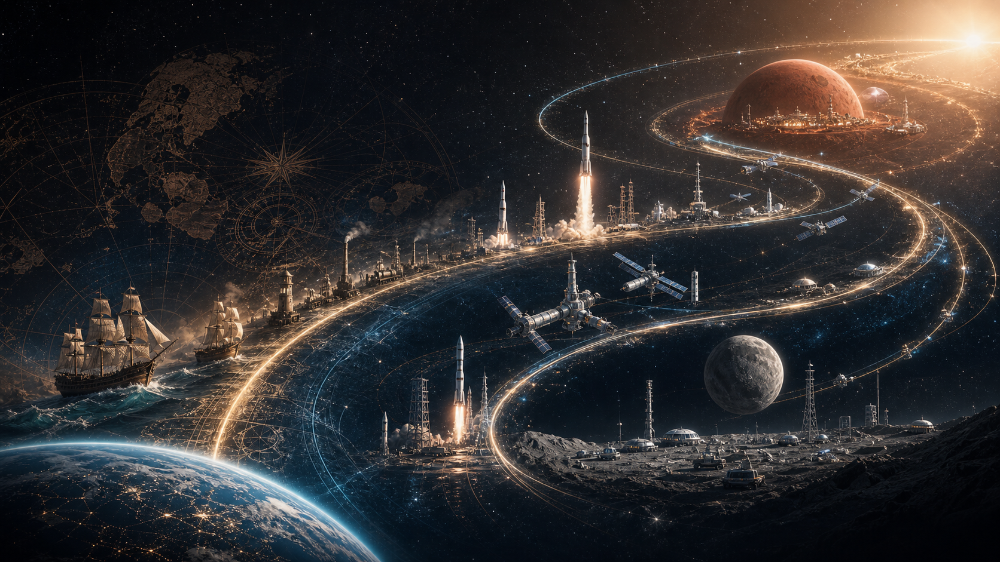
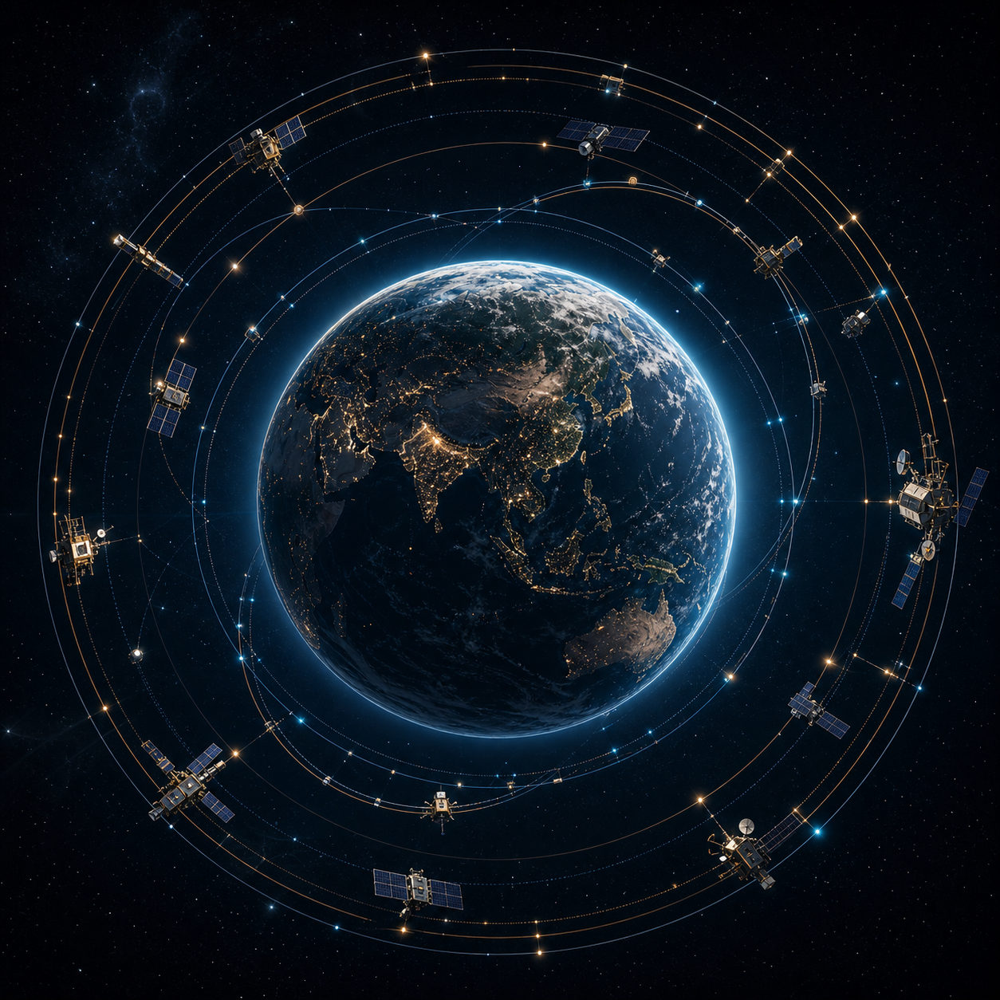

01 冷战竞赛太空首先是制度、军事与工业能力的舞台。
1957-未来 · 美苏竞赛 · 中美同台 · 星际文明
商业航天不是简单的公司发射火箭，而是用商业机制支撑高风险探索。 就像大航海时代的公私合力曾推动远洋冒险，今天的轨道经济正在把人类文明推向月球、火星和更远的星际未来。

01 冷战竞赛太空首先是制度、军事与工业能力的舞台。

02 中美同台国家工程和商业集群共同进入轨道竞争。

03 星际文明马斯克路线把商业航天推向火星和多行星文明。
早期是美苏线：太空是超级大国竞赛。今天是中美线：国家能力、商业公司和低轨星座同台较量。 第三条是马斯克线：SpaceX 的速度明显跑在商业航天前列。最后一条是文明线： 商业机制让探索不再只靠国家预算，而成为推动人类升维的长期动力。
美苏线
从 Sputnik 到 Apollo，太空首先是超级大国的国家意志。中美线
进入 21 世纪后，竞争中心从美苏转向中美：空间站、月球、低轨星座和商业火箭同时展开。马斯克线
SpaceX 把可复用、Starlink、载人运输和火星叙事压成一条高速推进的商业路线。文明线
商业航天像大航海时代的公私合力，把冒险转化为可持续的文明扩张机制。下面不再只是一组文字卡片：每个阶段都有对应的历史 symbol，形成从冷战、国家基建、中美竞争到星际文明的视觉阶梯。

卫星、载人、登月，是冷战国家意志的最高舞台。

航天飞机、空间站和长期在轨实验，把太空从壮举变成系统工程。

神舟、天宫、嫦娥让中国建立独立完整的空间能力。

SpaceX 用可复用火箭、商业载人和 Starlink，把商业航天速度推到新量级。
美国领先在复用和商业化，中国追赶在空间站、月球工程、民营火箭和低轨星座。

月球基地、火星移民和深空运输，让商业航天从产业故事变成文明故事。
筛选不同轨道，可以看到国家竞赛、商业机制和文明目标怎样相互交错。
苏联发射第一颗人造地球卫星，太空时代正式开始。美国迅速把航天上升为国家战略。
人类第一次进入太空，载人航天成为超级大国竞争的新高地。
美国把冷战航天竞赛推向高潮。登月不是商业项目，却奠定了后来航天工业链的深厚基础。
中国第一颗人造卫星进入太空，中国成为拥有独立发射和卫星能力的国家之一。
美国尝试让航天运输走向可重复使用。它并未真正降低成本，却留下了可复用航天器的长期想象。
杨利伟进入太空，中国完成载人航天突破，后续空间实验室和空间站工程由此展开。
Elon Musk 创立 SpaceX。Falcon 1 在 2008 年成功入轨，证明小型创业公司也能进入轨道发射赛道。
SpaceX Dragon 执行国际空间站商业补给任务，政府开始更明确地购买商业航天服务。
政策和资本环境开始变化，一批民营火箭与卫星公司进入航天产业链。
火箭不再只是“一次性消耗品”。可复用把商业航天的成本结构和发射节奏推向新阶段。
星际荣耀双曲线一号成功入轨，中国商业发射从概念走向真实任务。
SpaceX 把 NASA 宇航员送往国际空间站，商业公司正式进入载人轨道运输核心环节。
中国形成长期载人驻留和空间实验平台，国家航天能力从“任务型”进入“基础设施型”。
蓝箭航天朱雀二号入轨，天兵科技天龙二号首飞成功，中国商业火箭开始进入更高技术密度赛道。
嫦娥六号完成月球背面采样返回，千帆等低轨星座启动部署，中国把深空能力和商业网络建设同时推进。
SpaceX 仍不是普通意义上的公开上市公司，但它的估值、融资、Starlink 现金流和火星目标，让商业机制与星际文明想象绑定在一起。
月球基地、火星移民、深空运输和在轨产业，将商业航天从产业升级推向文明升维。
国家仍然定义战略方向，但商业公司把风险、资本、制造、服务和市场连接起来，让探索不再只依赖一次性预算。
王室、商人、船队、保险和贸易公司共同承担远航风险，海洋探索由此从冒险变成持续扩张的制度。
政府采购、风险资本、卫星服务、可复用火箭和星座收入共同支撑太空探索，把火箭变成可迭代的产业平台。
当运输成本下降、轨道基础设施变密，月球基地、火星移民和深空经济才有机会从愿景变成历史进程。
轨道经济只是中间层。更宏大的目标，是让地球文明具备离开单一星球、建设月球基地、登陆火星并长期生存的能力。

从大陆到海洋，从天空到轨道，人类文明每一次升维都伴随着新的交通系统、新的商业制度和新的世界想象。 商业航天的意义，正是在国家工程之外，创造一套能持续承担风险、持续迭代技术、持续扩大边界的机制。

Orbital Economy 轨道经济复用、批量制造、快速周转
Starlink、千帆、国网
科研、制造、旅游
采样、基地、资源验证
火星移民与多行星文明
点击任意缩略图可以放大查看，并下载单张图片。